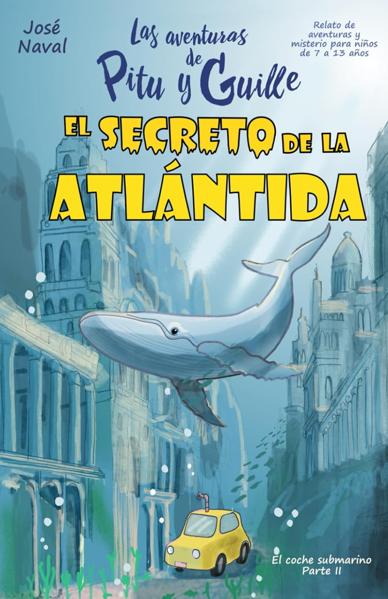
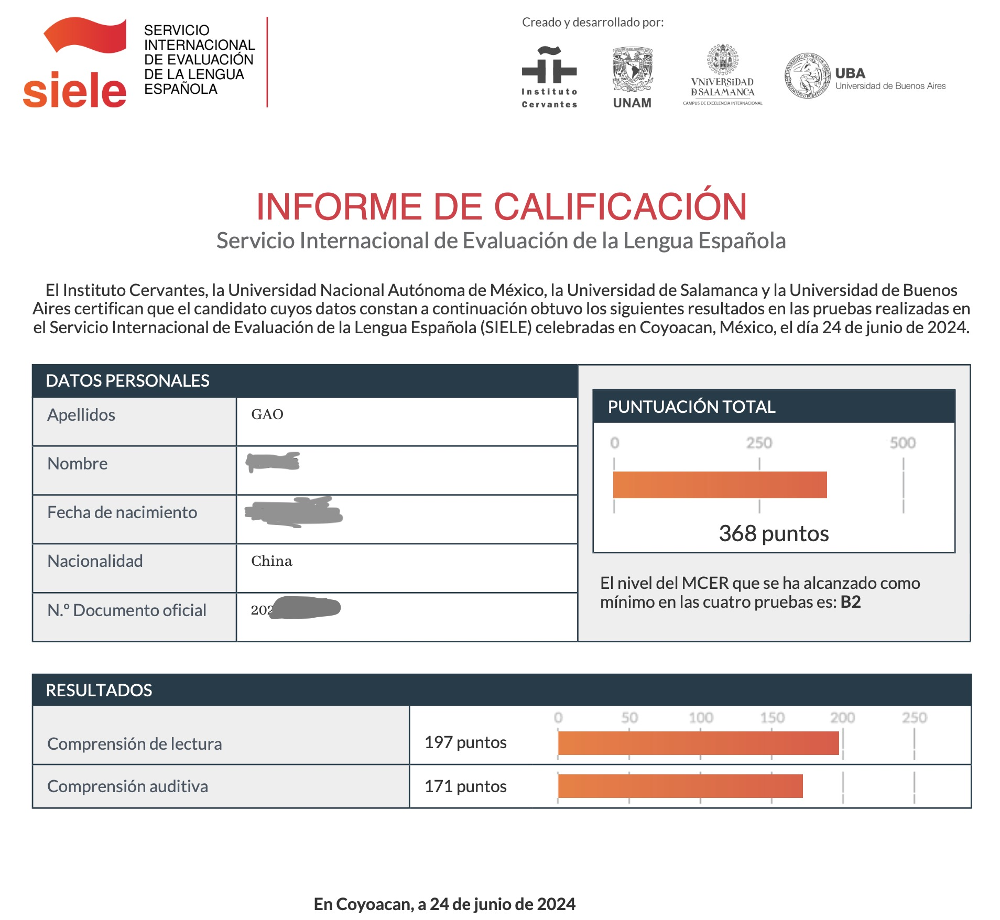

學習西班牙語的第四個月
引言：2024 年 2 月底，從成都經過舊金山轉機 ✈️，我來到了墨西哥 🇲🇽。 原本計劃花半年時間一路向南旅行 🗺️，從墨西哥，危地馬拉，秘魯，直到阿根廷，但在墨西哥城停留一段時間後，說不出具體原因，但就是喜歡上了這座陽光明媚、綠樹成蔭 、熱情友好的城市。 最終，旅行計劃變成了 4 個月的西班牙語學習計劃 🗒️，我想要用 4 個月時間，把西班牙語從零學到可以自由地讀小說和聽播客的水平。
第四個月的末尾，參加了西班牙語等級考試 SIELE 的閱讀和聽力考試，聽力 B2，閱讀 B2（口語和寫作沒考，自我估計在 A2 ～ B1；第二個月的末尾也考了一次 SIELE ，聽力 A2，閱讀 B1）。 但原定的目標還沒有完全實現，讀小說還是有很多生詞，聽播客也需要跟著西語字幕，因此後面的計劃是慢慢積累詞彙量啦。
第四個月的學習重點：
- 聽力：精聽了 Charlas Hispanas 的前 80 期播客，收聽時長大約 40 小時；泛聽了大量西語播客和 YouTube 西語視頻。
- 詞彙：讀了 3 本西語兒童讀物，一本巴西小說的西語譯本；用西語助手背誦 A1 ～ A2 的生詞。
- 語法：在 UNAM 大學的外國人教育中心上課，週一到週五每天上課四個半小時，老師帶領我們用練習題、對話、作文、聽力來反复應用過去式、將來式、賓語代詞。
- 口語：課程中的一部分是一個西語話劇的排演，老師給我們糾正發音，每天睡前睡後都在背誦台詞。
第四個月的學習中使用過的非常推薦的材料：
- El alquimista：暢銷書《牧羊少年的奇幻之旅》的西語譯本，175 頁，詞彙簡單，非常推薦。 中文版幾年前就讀過，講訴一個追尋夢想的故事，“當你真心想要做成一件事，整個世界都會來幫助你”。 考完 SIELE 之後，聽了作者保羅·科埃略的英文采訪，他說，“其實每個人都知道自己真正想要的是什麼，只是大部分人忽略了它，不敢去實現它”。
- El secreto de la Atlántida：一本 97 頁的兒童讀物（7 ～ 13 歲），故事發生在海邊，涉及很多海洋相關的詞彙，但總體難度不大，kindle 版配圖精美，情節很有趣。
- Charlas Hispanas：每期 10 分鐘左右，每期由一個主播講述語法、新聞、日常生活或拉美國家的文化習俗，三個主播分別為墨西哥、秘魯和哥倫比亞人。 作為精聽的材料，好在發音清晰流暢，每期都有文稿、詞彙表和練習題。
下個月的學習計劃（下個月就回國了，計劃每天學習西語的時間在一個半小時左右）：
- 積累詞彙：用西語助手背誦 DELE B1 詞彙
- 練習聽力：精聽 Charlas Hispanas
P.S. 外語學習理論回顧
第一個月的理論部分，介紹了外語學習最重要的兩點，一是要有足夠的樂趣驅動，二是要有足夠長的時間浸泡在語言裡。第二個月，介紹了通過閱讀來積累詞彙的一些竅門。第三個月，分享了用艾賓浩斯遺忘曲線來複習筆記的方法。
前三個月的初學階段，通過閱讀西語分級讀物來提高閱讀能力、積累詞彙、熟悉上下文；在閱讀能力的基礎上，第四個月開始大量練習西語聽力，培養西語語感；學到 B1 ～ B2 之後，詞彙量逐漸成為提高閱讀和聽力能力的瓶頸，所以第四個月開始老老實實用西語助手背誦單詞表，不求牢牢記住，只希望在聽力和閱讀中遇到時 能有個印象。
如果繼續在西語國家學習的話，第五個月開始，我可能會去和同等級的同學大量練習口語對話了，用西語去思考，這樣也會提高閱讀和聽力的理解速度（根據學英語 的經驗）。 但是由於我的間隔年到此也結束了，回國後，我打算主要用背單詞和聽播客的方式慢慢積累西語；找到合適的材料的話，希望能糾正西語發音，提升口語自信；詞彙 量提高，發音糾正後，再來西語國家，口語會提高很快。


文章作者 Harold Gao
上次更新 Jun 26, 2024